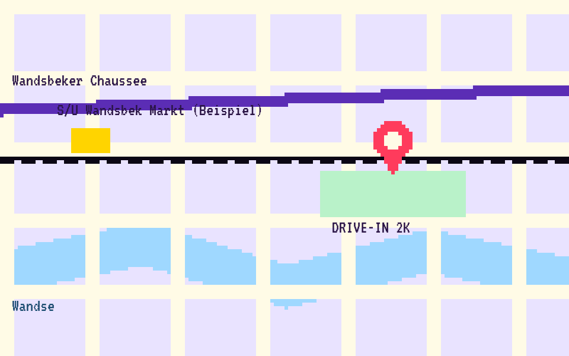

Infos für euren Teamabend
Hier findet ihr alles Praktische: wie ihr zur Sternenwiese kommt, Antworten auf häufige Fragen, das Impressum und woher unsere Bilder stammen.
Anfahrt
Sternenwiese 2000, 22041 Hamburg-Wandsbek (fiktive Adresse)
Mit dem Auto
Folgt der Wandsbeker Chaussee stadtauswärts und biegt hinter der Bahnbrücke rechts ab. Ab dort führen gelbe Pixel-Schilder bis zur Einfahrt. Die Zufahrt öffnet um 19:30 Uhr, bitte nicht früher anreisen.
Mit Bahn und Bus
Von der Haltestelle Wandsbek Markt sind es zu Fuß etwa zwölf Minuten. Wer einen Leihwagen gebucht hat, steigt direkt auf dem Gelände ein. Nach dem Film fahren noch Busse und die U-Bahn zurück in die Innenstadt.

Häufige Fragen
Wie höre ich den Ton im Auto?
Stellt euer Autoradio auf UKW 87,6 MHz. Wer kein Radio hat, bekommt am Einlass ein kleines Leihradio. Bitte lasst den Motor dabei aus – die meisten Autos können das Radio auch mit Zündung auf Stufe eins betreiben.
Was passiert, wenn meine Autobatterie leer ist?
Kein Problem: Unser Team hat Starthilfekabel und eine mobile Powerbank für Autos dabei. Meldet euch einfach mit Warnblinker oder per Telefon an der Info-Hütte.
Dürfen wir eigenes Essen mitbringen?
Snacks für das eigene Auto sind erlaubt. Für größere Picknicks und Getränke bitten wir euch, die Food-Trucks zu nutzen – sie gehören zum Konzept und sind im Paket teilweise schon enthalten.
Können wir auch ohne Auto kommen?
Ja. Ihr könnt Leihwagen dazubuchen oder in Reihe 3 auf Decken und Klappstühlen neben den Autos sitzen. Dort gibt es auch Leihradios für den Ton.
Ist das Gelände barrierefrei?
Die Wiese ist eben und mit Platten ausgelegt. Es gibt einen rollstuhlgerechten Toilettenwagen und reservierte Plätze direkt am Weg. Sagt uns bei der Anfrage Bescheid, dann planen wir das mit ein.
Was ziehen wir am besten an?
Abends wird es auch im Sommer kühl. Bringt eine Jacke mit – und wer mag, kommt im Y2K-Outfit. Beim Abend „Der Teufel trägt Prada“ gibt es dafür sogar einen Preis.
Impressum
Studienprojekt der Kunstschule Wandsbek, keine echte Veranstaltung. Alle Termine, Preise, Adressen und Angebote auf dieser Website sind erfunden. Es werden keine Anfragen verarbeitet und keine Daten gespeichert.
Verantwortlich für den Inhalt: Studierende der Kunstschule Wandsbek im Rahmen eines Webdesign-Kurses. Gestaltung, Texte und Grafiken wurden für diese Übung selbst erstellt.
Verwendete Schriften
Unbounded, VT323 und Space Grotesk stehen unter der SIL Open Font License. Die Schriftdateien und Lizenztexte liegen bei den Dateien dieser Website, es werden keine externen Dienste geladen.
Bildnachweis
Alle Rasterbilder wurden selbst mit einem Python-Skript (Bibliothek Pillow) gezeichnet: die Szenen als Pixel-Art, die Film-Motive als flache Illustrationen. Es wurden keine KI-Werkzeuge, keine Filmstills und keine Plakate verwendet. Logo, Favicon und Icons sind selbst geschriebene SVG-Dateien. Es wurden keine Fotos oder Bilder von fremden Seiten verwendet.
- sternenhimmel.webp – Pixel-Sternenhimmel mit Mondsichel: selbst erstellt als Pixel-Art mit Python und der Bibliothek Pillow, keine KI.
- auto-lila.png, auto-gelb.png, auto-mint.png – Pixel-Autos in der Rückansicht: selbst erstellt als Pixel-Art mit Python und der Bibliothek Pillow, keine KI.
- cockpit.png – Blick aus dem Auto mit Lenkrad und Armaturenbrett: selbst erstellt als Pixel-Art mit Python und der Bibliothek Pillow, keine KI.
- popcorn.gif – animierter Popcorneimer: selbst erstellt als Pixel-Art mit Python und der Bibliothek Pillow, keine KI.
- ticket.png – Kinoticket „Admit one car“: selbst erstellt als Pixel-Art mit Python und der Bibliothek Pillow, keine KI.
- projektor.webp – Filmprojektor mit Lichtstrahl: selbst erstellt als Pixel-Art mit Python und der Bibliothek Pillow, keine KI.
- leinwand-aufbau.jpg – Leinwandaufbau bei Sonnenuntergang: selbst erstellt als Pixel-Art mit Python und der Bibliothek Pillow, keine KI.
- team-picknick.jpg – Team-Picknick unter der Lichterkette: selbst erstellt als Pixel-Art mit Python und der Bibliothek Pillow, keine KI.
- og-drive-in.jpg – Vorschaubild mit Leinwand und Autos: selbst erstellt als Pixel-Art mit Python und der Bibliothek Pillow, keine KI.
- karte-anfahrt.png – Lageplan (schematisch, kein echter Stadtplan): selbst erstellt als Pixel-Art mit Python und der Bibliothek Pillow, keine KI.
- klapphandy.png – Y2K-Klapphandy: selbst erstellt als Pixel-Art mit Python und der Bibliothek Pillow, keine KI.
- cockpit-programm.png, lenkrad.png – Cockpit und Lenkrad auf der Programmseite: selbst erstellt als Pixel-Art mit Python und der Bibliothek Pillow, keine KI.
- apple-touch-icon.png – App-Symbol für Smartphones: selbst erstellt als Pixel-Art mit Python und der Bibliothek Pillow, keine KI.
- film-heist.webp – Motiv zu Ocean’s Eleven (2001): selbst gezeichnete flache Illustration (Python/Pillow), frei nachempfunden, kein Filmstill und kein Plakat.
- film-riff.jpg – Motiv zu Findet Nemo (2003): selbst gezeichnete flache Illustration (Python/Pillow), frei nachempfunden, kein Filmstill und kein Plakat.
- film-helden.webp – Motiv zu Die Unglaublichen (2004): selbst gezeichnete flache Illustration (Python/Pillow), frei nachempfunden, kein Filmstill und kein Plakat.
- film-fussball.jpg – Motiv zu Kick It Like Beckham (2002): selbst gezeichnete flache Illustration (Python/Pillow), frei nachempfunden, kein Filmstill und kein Plakat.
- film-mode.webp – Motiv zu Der Teufel trägt Prada (2006): selbst gezeichnete flache Illustration (Python/Pillow), frei nachempfunden, kein Filmstill und kein Plakat.
- film-code.jpg – Motiv zu Matrix (1999): selbst gezeichnete flache Illustration (Python/Pillow), frei nachempfunden, kein Filmstill und kein Plakat.
- film-insel.webp – Motiv zu Mamma Mia! (2008): selbst gezeichnete flache Illustration (Python/Pillow), frei nachempfunden, kein Filmstill und kein Plakat.
- logo.svg, favicon.svg, icon-auto.svg, icon-stern.svg, icon-ticket.svg, icon-pin.svg, icon-popcorn.svg, muster-sterne.svg, fensterknoepfe.svg – Vektorgrafiken, selbst erstellt. Die Schrift im Logo ist Unbounded, in Pfade umgewandelt.